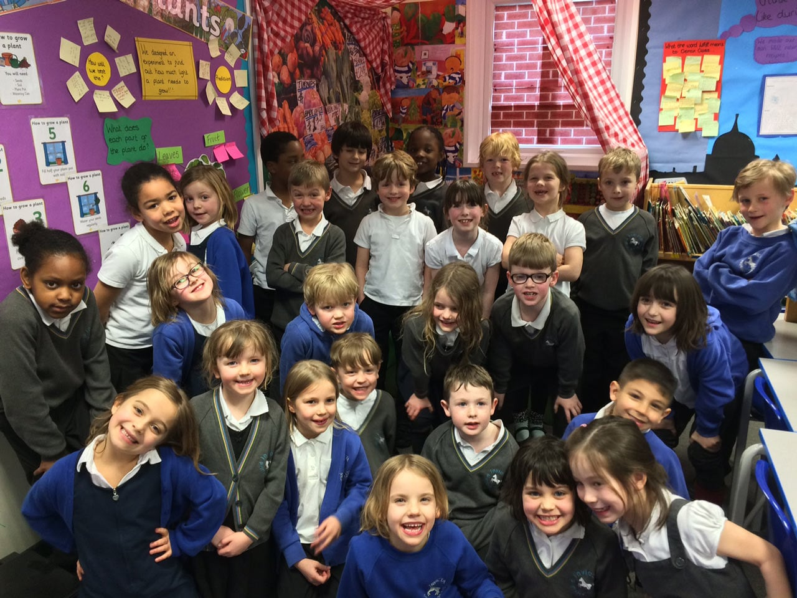
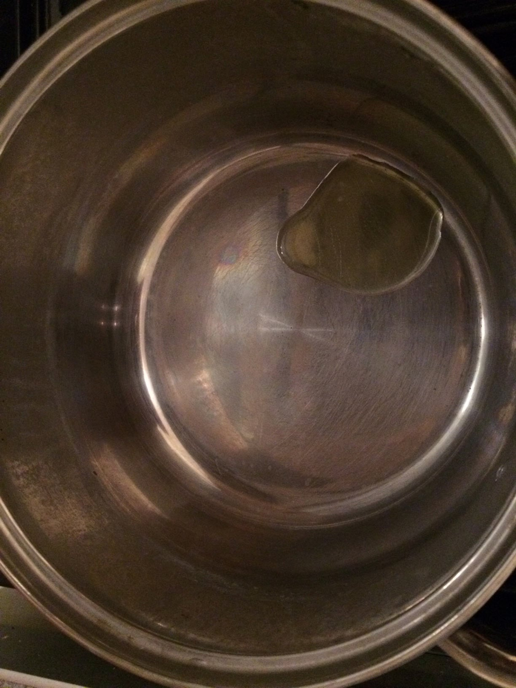
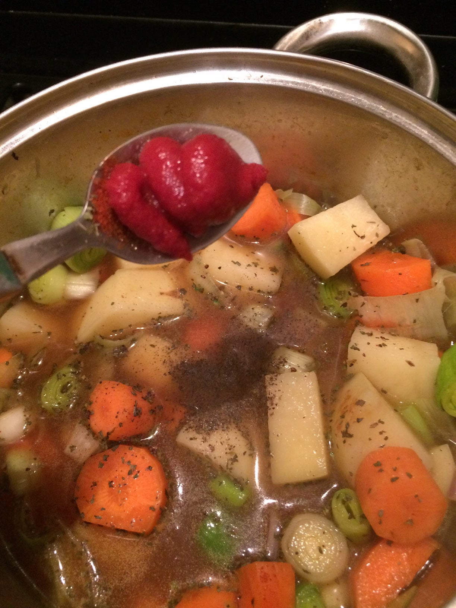
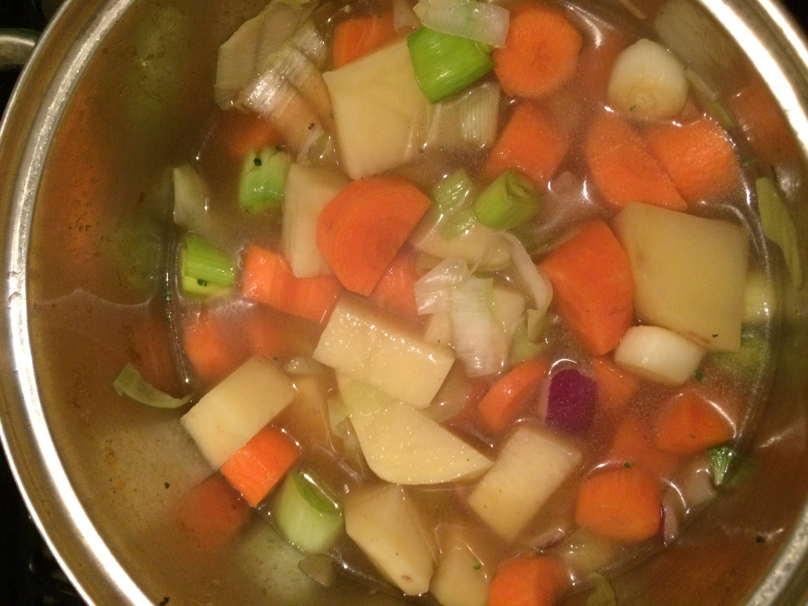
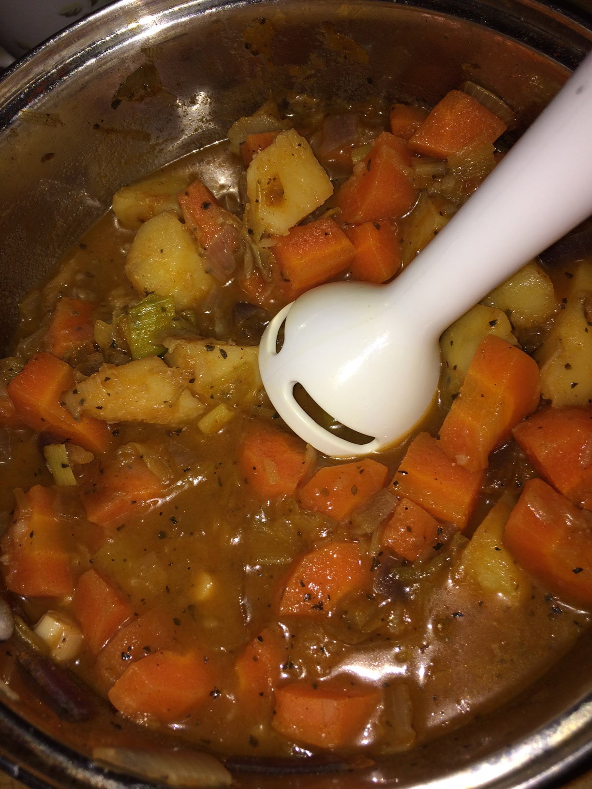
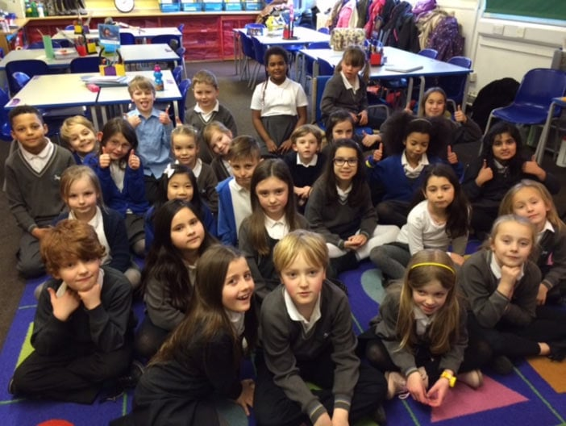

Welcome to Invicta Primary Enterprise Week!
Our challenge this term is How can we successfully create a mini-enterprise?
Take a look inside to see our amazing outcomes!
Reception
Blackheath

Reception classes in Blackheath have been working hard to read and write their own recipes, weigh ingredients and use money. We have worked with our partner Peter Blaxall , a professional chef to create our own Taste of Invicta recipe! Join us for an International Food Night on Thursday the 17th March from 4-6pm at Shooters Hill Rugby Club!
Deptford
Invicta Deptford is celebrating the cultural diversity of the children and families that make our school so special. We are hosting a 'Taste The World Event' with our partner Lean Mean Moroccan Cuisine.It’s an opportunity to experience different dishes from countries far and wide. The children are incredibly excited and about their event. Please join us at Invicta Deptford on Friday the 18th of March 3pm - 4pm for an array of tasty treats, music and cultural costumes.
Nursery

Nursery have made playdough by following a recipe and weighing out ingredients . We we weighed and mixed the ingredients together. Our partner WildPixel.Ltd helped us to design a recipe page. You can buy our recipe for 50p. It comes in it’s own amazing egg shaped surprise.
Year 1
We have designed an amazing, reusable cotton tote. It has a bird's eye view map of Brilliant Blackheath Standard, designed by children. Scroll down to listen to our amazing e-book and find out all about Brilliant Blackheath and all of the fantastic places to shop. Don’t forget to visit The Voewood and Blackheath Library to buy your bag. They cost £4 each.
In Year 1 we have been learning all about our local area.
Year 2
Year 2 have been learning all about growing plants, how to be healthy and their local area. They have teamed up with local green grocer Apple N Orange to create soup kits from their delicious vegetables. Both classes carried out meticulous market research to identify type of product, pricing and flavour, which even included their own ‘blind’ tasting soup session. The classes chose to sell soup kits rather than ready made soups as they experienced soup making themselves on a trip to Woodlands farm and decided they wanted all the fun of making their soups as well as eating them! The soups are a delicious, nutritious and healthy treat and great fun to make for all the family. So if you want to try it out for yourself head to Apple N Orange on Blackheath Standard to buy your very own vegetable soup kit.
How to make tasty leek soup
Ingredients
- 1 onion
- 1 potato
- 2 carrots
- 1 leek
- 500ml vegetable stock
- 1 teaspoon of oil
- 1 teaspoon of paprika
- 1 teaspoon of basil
- 1 teaspoon of tomato puree
- A pinch of pepper
First Step
First wash your hands with soap and then wash the leek, ensuring you remove any possible mud.
Second Step
Next finely chop the vegetables and whilst you are chopping gently heat the oil in a pan.
Third Step
Once the oil is hot, add the chopped onion and leek and fry until soft.
Fourth Step
When the onion and leek are ready, add the carrot and potato and cook for 5 minutes, stirring frequently.
Fifth Step
After that, carefully pour in the vegetable stock and then you can add the tomato puree, paprika, basil and pepper.
Sixth Step
Slowly stir the soup and let it simmer for 15 minutes or until the vegetables are cooked thoroughly.
Seventh Step
Let the soup cool for 5 minutes and then cautiously blend using a hand blender.
Eighth Step
Blend until the soup is at the desired consistency, serve and enjoy!
Year 3
Hello! We are Year 3 and we are hoping to impress you with our hard work on growing plants and vegetables. We would like you to support us and help people live HEALTHIER LIVES by growing their own vegetables. We are selling seed kits with 12 types of seeds at Passion Flower. They cost £5 each.
This is Drake class!
This video is about plants and we really want you to see it.
This is Golden Hinde class!
This video is about planting seeds.
This page was made by Ella and Daniel.
Year 4
Welcome to our exciting Enterprise Week!
In year 4 we have been working hard to create a fun way to encourage people to take part in weekly exercise. We have also been making healthy energy drinks, to promote being healthy.
Our exciting exercise class will be FREE!
After the energetic exercise class you can get a tasty, but still healthy, energy drink for a small price.
Our refreshing energy drinks are made the day of your exercise class with fresh fruits.
Energetic Exercise to Fun Fitness
Fresh Fruits to Energy Drinks
Year 4 are sure that this app has everything you need to keep healthy and fit…so book now to avoid disappointment!
Beagle Class
Darwin Class
Photos!
Year 5

We are MacArthur Class and we have set up a mini-enterprise specialising in South American food.
Our business, Exquisite Foreign Foods Ltd., has created a unique product: a beautiful book that combines travel writing with fantastic recipes that will challenge your cooking skills and introduce you to new tastes.
We are specialists in South American culture and our book will transport you to this fascinating continent through their delicious cuisine.
Where to buy our recipe book
What can you find in the recipe book?
South American recipes by year 5 Invicta Primary School
Our business partners are Buenos Aires Cafe, the destination for Argentinian food in Greenwich. As well as endorsing our product, Buenos Aires Cafe are selling it at their cafe in Greenwich and restaurant in Blackheath. Why not enjoy the delights of professionally prepared Argentinian cuisine before buying our book and becoming the chef yourself?
Watch Jessica’s cookery class to discover one of our South American favourite recipes.
Why not take our South American food quiz to learn more about the ingredients and food culture in South America?
Click the buttons below to find out more!

You should go there because they have nice food and a nice place. Click here for Buenos Aires booking
This is a picture of the Buenos Aires Cafe. The Buenos Aires cafe has lovely food and a wonderful interior. Our recipe book is selling there. You can make all types of food using our book, for example delicious chicken and lamb.
Video page
BackThe reviews
Back5 stars!!!
This book is amazing!!!!I've learnt loads I highly recommend it.
Contact page
BackInvicta Primary School
Invicta Road
London
SE3 7HE
tel: 020 8858 3831
fax: 020 8293 3620
Email: admin@invictaprimary.co.uk